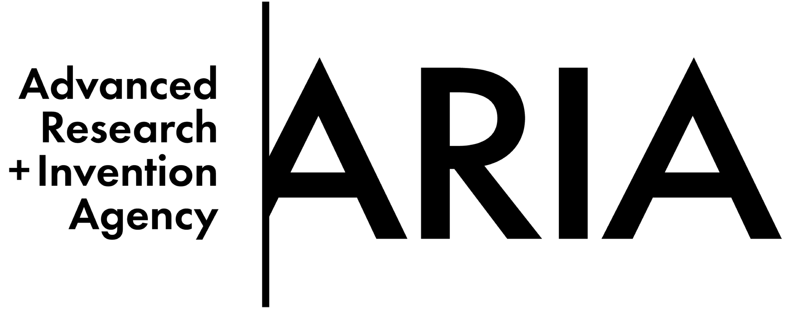

Awards and recognitions
- 2025 – Forecasting Climate Tipping Points - £1 million project, Advanced Research + Invention Agency (ARIA)
- 2024 – EURASIP Early Career Award, European Society of Signal Processing (EURASIP)
- 2024 – ELLIS Fellow, European Laboratory for Learning and Intelligent Systems (ELLIS Society)
- 2023 – Leverhulme Research Fellow, Leverhulme Trust
- 2021 – Alan Turing Fellow, The Alan Turing Institute
- 2018 – Fulbright Fellow, French-American Fulbright Commission
- 2018 – Marie Curie Fellow, FP7-COFUND program of the European Commission
- 2018 – IEEE Senior Member, Institute of Electrical and Electronics Engineers (IEEE)
- 2016 – Fulbright Fellow, Spanish-American Fulbright Commission



Other responsibilities
Organization
- Local Chair of the 23rd IEEE Statistical Signal Processing Workshop (SSP 2025), Edinburgh, UK, June 2025.
- General Chair of the 6th Sequential Monte Carlo Workshop (SMC 2024), Edinburgh, UK, May 2024.
- Lead organizer of the Summer School in Bayesian Filtering, Edinburgh, UK, May 2024.
- General Co-Chair of the 5th Sequential Monte Carlo Workshop (SMC 2022), Madrid, Spain, May 2022.
- Local Chair of the 27th European Signal Processing Conference (EUSIPCO 2019), Coruña, Spain, September 2025.
- Co-chair of the 4th EURASIP-IEEE Spanish Workshop on Signal Processing, Information Theory, and Communications, Santander, Spain, July 2016.
Editorial duties
- Associate Editor of the IEEE Transactions on Signal Processing (2020-2025).
- Guest Editor of a special issue in Foundations of Data Science on Sequential Monte Carlo Methods (2023-2025).
- Guest Editor of a special issue in EURASIP Journal on Advances in Signal Processing on Monte Carlo methods (2017-2018).
Committees
- Elected member of the Signal Processing Theory and Methods Technical Committee at the IEEE Signal Processing Society, (2020-).
- Chair of the Industry subcommittee.
- Elected member of the Theoretical and Methodological Trends in Signal Processing Technical Area Committee at the European Association for Signal Processing (EURASIP), (2019-).
- Chair of the Conferences and Workshops subcommittee.